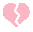

↪ Relationship Dynamics
✦ Overview ✦
In some character profiles, symbols are placed next to a character's icon to represent their relationships. These symbols indicate that a particular character has a deeper connection with another. However, the exact nature of the relationship isn’t always clear—it could signify lovers, friends, siblings, or family members. Here are the descriptions for those particular symbols:
Red heart: Symbolizes a loving relationship between the two. They are lovers, soulmates, and lovebirds—planning to marry and stay forever in love.

Broken heart: Represents an ex-lover.Broken yellow heart: Represents an ex-friend.
Baby symbol: Indicates a "parent-child" relationship, meaning "I am the child of."
Equal symbol: Represents a sibling relationship, meaning "My sibling is."
Blue heart: Signifies unrequited love or a crush. (heart means that their love was denied upon asking, thus i confessed, and they said No)
Red melting symbol: Indicates a one-sided obsession.
Upside-down black heart: Represents an unhealthy, co-dependent relationship. Their connection is extremely complex and difficult to define